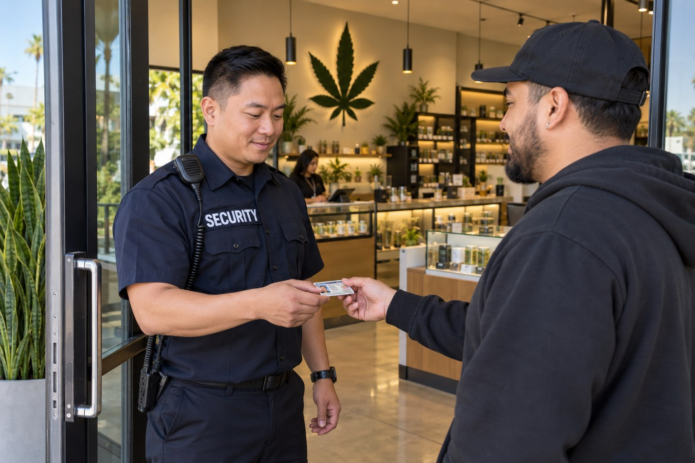

Cannabis Dispensaries

A dispensary is a customer facing business with product, cash and restricted business areas. Security personnel need a clear understanding of the client’s rules and their assigned responsibilities. Paradigm reviews the entrance, customer areas and other parts of the premises included in the service without publishing the details of the operator’s security arrangements.
Security for the Dispensary Environment
The guard role can involve professional interaction with customers and communication with management when concerns arise. The officer is not a substitute for the operator’s retail staff, inventory records or licensing representative. Keeping those functions distinct makes the service description more useful and avoids presenting every business responsibility as part of the security assignment.
Entry Responsibilities and Facility Support
Dispensary security can support the client’s entry and visitor process, including identification related responsibilities agreed with management. Customer access and occupancy responsibilities should be clearly defined. Officers can communicate concerns about unauthorized entry or disturbances and document incidents within the scope of the service.
Facility coverage can also be reviewed when the concern involves the premises outside customer business hours. The exact assignment is confirmed privately. This page does not state that every licensed dispensary requires armed officers or that a guard assignment alone satisfies every state and local condition affecting the business.
Premises Security and Asset Protection
General premises security focuses on the environment, access and people using the location. Dispensary asset protection places additional focus on product and cash related concerns. Paradigm can review both needs while keeping the responsibilities distinct. Inventory accounting and business compliance remain functions of the authorized operator and its appropriate advisers.
Cannabis transport is another separate activity. California’s Department of Cannabis Control states that transporting cannabis and cannabis products requires a distribution license. A premises guard assignment should not be treated as proof of transportation authorization. Any inquiry involving that activity requires its own service confirmation.
Dispensary Security Across Los Angeles and San Bernardino Counties
Paradigm works with licensed cannabis businesses in Los Angeles County and San Bernardino County. The proposed assignment depends on the business location, lawful operation and responsibilities being requested. A consultation provides space to explain the concerns while keeping sensitive information about the premises private.
Contact Paradigm to review entry security, customer and employee concerns, facility coverage or related asset protection needs. We will clarify the available service and the roles involved. BSIS publishes California security guard registration requirements. Those requirements are distinct from cannabis business licensing and do not replace the operator’s responsibility to confirm its own obligations.